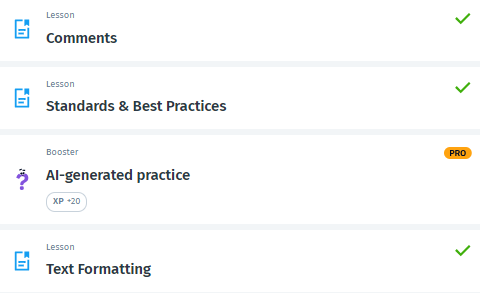

<!-- 
1)უყურეთ გაკვეთილს თავიდან.

Done

2) შექმენით 2 სხვადასხვა საიტი სადცაც გამოიყენებთ დღეს განვლილ მასალას. -->

<a href="web1.html">WEB1</a><br>
<a href="web2.html">WEB2</a><br>

<!-- 3) შექმენით 1 საიტი სადაც გამოიყენებთ ძველ მასალებს. -->

<a href="Web3.html">Web3</a><br>

<!-- 4) გაკეთეთ სოლოლერნი Text formatting-ის ჩათვლით. -->

